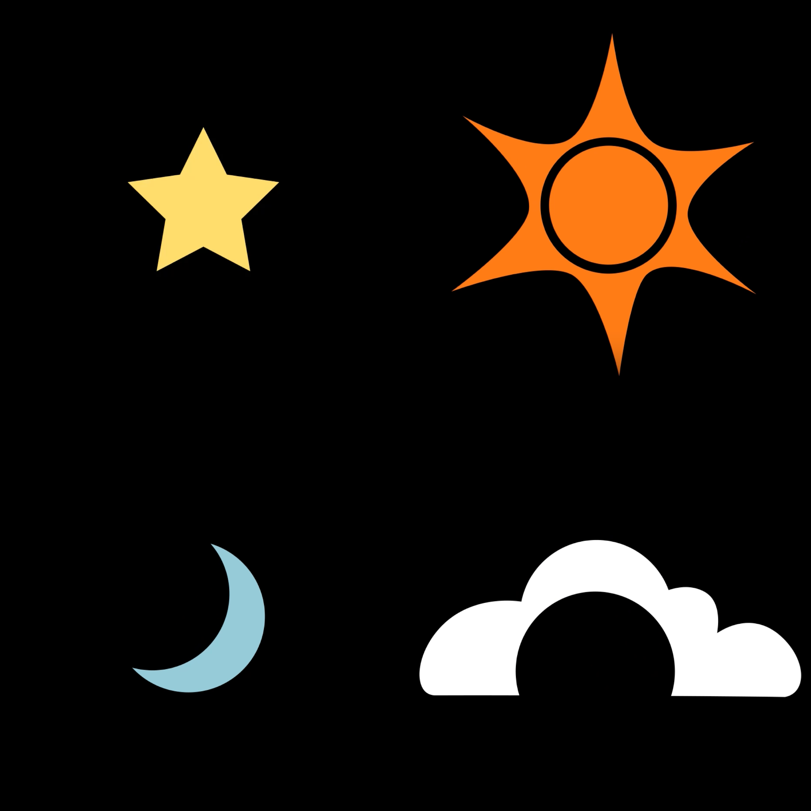

Watch AnimationPROJECTS.
Shape Morph Animation
Overview
A short looping animation exploring how simple shapes can transform into one another. The project was an opportunity to build technical confidence with keyframing for position, scale and paths.
Process and Reflection
The most important lesson was anticipation. A small pull-back before a movement, like a hand drawing back before throwing a ball, makes the motion feel more deliberate and strengthens the visual storytelling. Partway through, I also replaced some planned shape morphs with masks for the final transitions. This departed from my original plan but produced a cleaner result.
Future development
Add smaller shapes that fly off the star’s tips as it warps into the sun, to emphasise the momentum of the spin. I began testing this, but controlling particle direction in motion and keeping scale keyframes from shifting position are problems I want to solve. Add shadows to give the shapes more depth.
Introduce a lightning bolt that strikes from the cloud and morphs into a star, creating a seamless loop. This may require learning matters. Integrate sound design from the start. Doing so earlier would help pace the animation and sync the motion more precisely.
Tools: Adobe After Effects
Audio: VIRALAUDIO and Diamond_Tunes via Pixabay